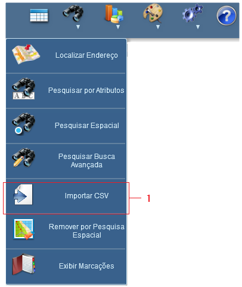

Importar Arquivo CSV
Seleciona arquivo no formato ".csv", a ser importado para aplicação.
Passos para importar arquivo csv:


1 - Clicar no Importar CSV;
2 - Selecionar camada de importação;
3 - Clicar no botão "Selecionar Arquivo" ;
4 - Escolher arquivo ".csv" para importação;
5 - Clicar em abrir.